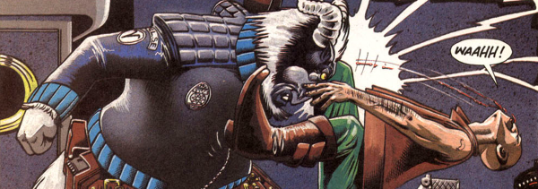

A deranged, militant vegan's fantasy future, in which our protagonist Inspector Raam (an anthropomorphic ram) is part of a totalitarian police force (in a flooded England) that has outlawed meat eating (it's considered murder) - even for carnivorous animals. It's like Looney Tunes on a mephedrone high.
Art by Simon Jacob
| Story Title | Parts | Pages | w indicates a wraparound coverCovers | Year(s) | Issues | Writer | Artist | Colourist | Letterer |
|---|---|---|---|---|---|---|---|---|---|
| [Book 1] | 7 | 39 | 743: Simon Jacob 1 | 1991 | 742-748 | Michael Cook | Simon Jacob | <-- | Elitta Fell |
| [Book 2] | 9 | 51 | 813: Simon Jacob 1 | 1992-1993 | 812-820 | Michael Cook | Simon Jacob | <-- | Elitta Fell |
| >> Posters / Teasers << | |||||||||
| featuring Inspector Raam | 1 | 1 | 0 | 1991 | 742 | n/a | Simon Jacob | <-- | n/a |
From Tharg's Thrill ArchivesPart 4: Dead Meat | 1 | 1 | 0 | 1993 | 854 | n/a | Simon Jacob | <-- | n/a |
| year | episodes | pages |
| 1982 | 0 | 0 |
| 1983 | 0 | 0 |
| 1984 | 0 | 0 |
| 1985 | 0 | 0 |
| 1986 | 0 | 0 |
| 1987 | 0 | 0 |
| 1988 | 0 | 0 |
| 1989 | 0 | 0 |
| 1990 | 0 | 0 |
| 1991 | 7 | 39 |
| 1992 | 4 | 21 |
| 1993 | 5 | 30 |
| 1994 | 0 | 0 |
| 1995 | 0 | 0 |
| 1996 | 0 | 0 |
| 1997 | 0 | 0 |
| 1998 | 0 | 0 |
| 1999 | 0 | 0 |
| 2000 | 0 | 0 |
| 2001 | 0 | 0 |
| 2002 | 0 | 0 |
Comic strip data (excludes other content):